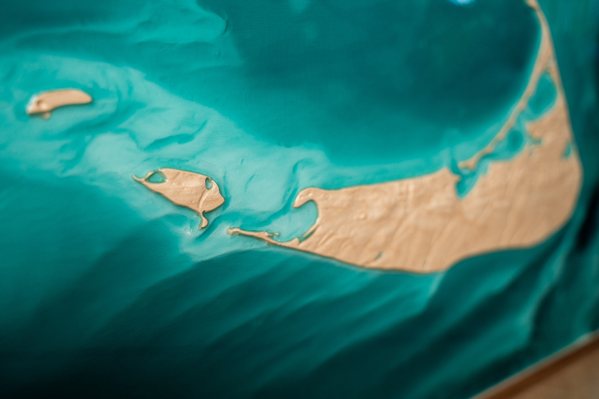
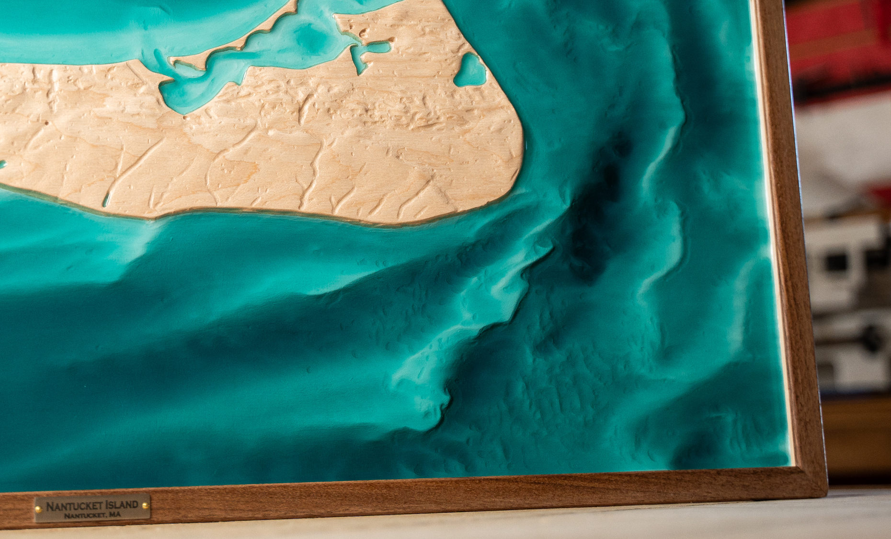

Bromley Mountain
Vermont • 2022
birch, walnut
27" × 24" × 3"
Hurricane Montain, North Conway, New Hampshire
November 2023
A one-of-one relief map capturing the dramatic coastline and rolling interior of Block Island, where New England bedrock meets the Atlantic. The piece uses graduated wood tones to represent elevation changes across the island's 10 square miles, while hand-poured turquoise epoxy resin captures the surrounding waters and harbors.
Created in collaboration with clients who spent childhood summers on the island, this piece honors both geographic accuracy and personal memory—from the Mohegan Bluffs on the southeast shore to the Great Salt Pond that bisects the island's center.

Full piece showing entire topography

Detail of coastal relief

Side angle showing depth

Close view of wood grain
The Story
This commission came from a couple who spent every summer of their childhood on Block Island— a place that shaped their sense of home, despite living hundreds of miles away during the school year. When they married, they wanted something that honored that shared geography.
During our consultation, they described specifics: the steep clay cliffs on the southeast shore, the bike ride from Old Harbor to New Harbor, the way the island feels both small and vast. We decided to capture the entire island, showing its compact scale while emphasizing the dramatic coastal relief that makes it feel so much larger.
The resin pour was particularly meaningful—we mixed a custom blue-green to match the exact hue of Block Island Sound on a calm August morning. They sent reference photos from their last visit, and we color-matched in the studio. The result isn't just geographically accurate; it's memory-accurate.
Commission Your Place
Every piece begins with a place that matters to you. Let's create something worthy of your story.
Start Your Commission